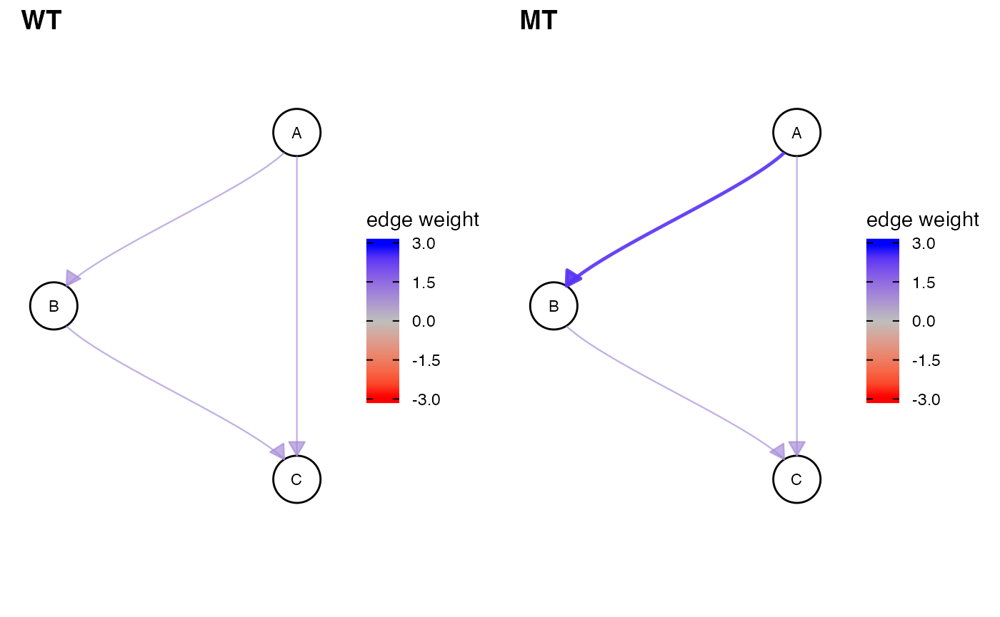
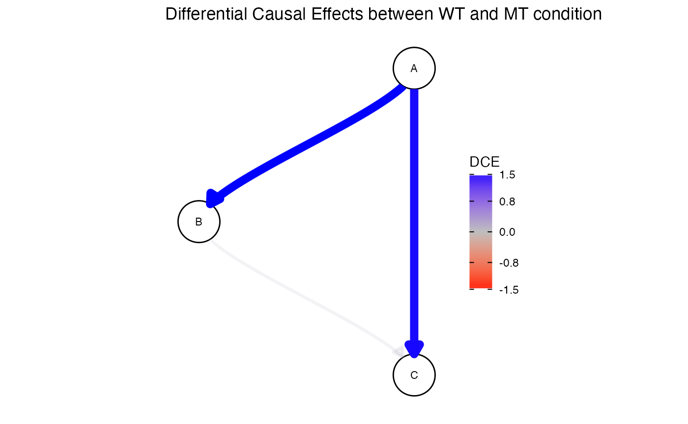
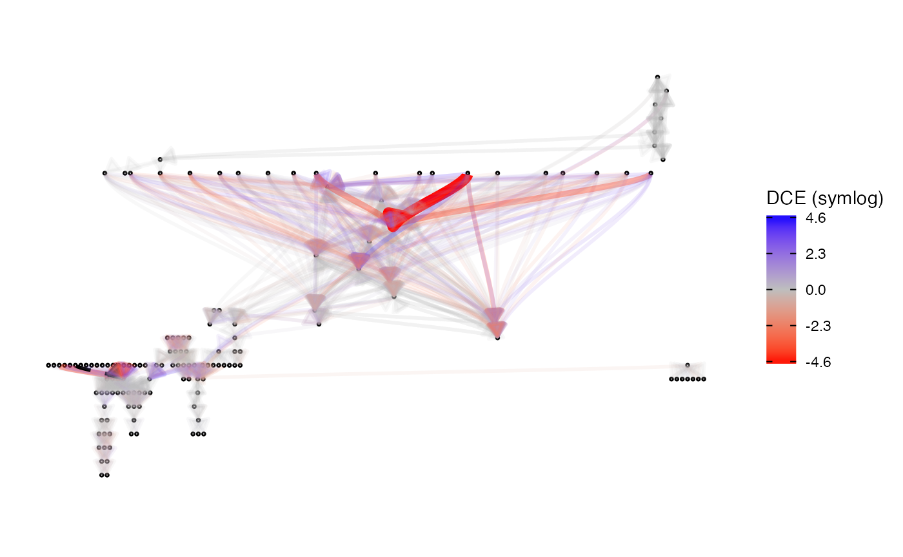

One cause of diseases like cancer is the de-regulation of signalling pathways. The interaction of two or more genes is changed and cell behaviour is changed in the malignant tissue.
The estimation of causal effects from observational data has previously been used to elucidate gene interactions. We extended this notion to compute Differential Causal Effects (DCE). We compare the causal effects in malignant tissue (e.g., from a tumor) and healthy tissue to detect differences in the gene interactions.
However, computing causal effects purely from observational data is difficult, because beforehand the gene network has to be reconstructed. To overcome this issue we use prior knowledge from literature. This largely improves performance and makes the estimation of DCEs more accurate.
Overall we can detect pathways which play a prominent role in tumorigenesis. We can even pinpoint specific interaction in the pathway that make a large contribution to the rise of the disease.
if (!require("BiocManager", quietly = TRUE))
install.packages("BiocManager")
BiocManager::install("dce")Load dce package and other required libraries.
# fix "object 'guide_edge_colourbar' of mode 'function' was not found"
# when building vignettes
# (see also https://github.com/thomasp85/ggraph/issues/75)
library(ggraph)
library(curatedTCGAData)
library(TCGAutils)
library(SummarizedExperiment)
library(tidyverse)
library(cowplot)
library(graph)
library(dce)
set.seed(42)To demonstrate the basic idea of Differential Causal Effects (DCEs), we first create a wild-type network by setting up its adjacency matrix. The specified edge weights correspond to direct causal effects and total causal effects are defined accordingly (Pearl 2010). This way, the detected dysregulations are endowed with a causal interpretation and spurious correlations are ignored. This can be achieved by assuming that the underlying network models causal relationships and selecting valid adjustment sets. In a biological setting, these networks correspond, for example, to a KEGG pathway (Kanehisa et al. 2004) in a healthy cell. Here, the edge weights correspond to proteins facilitating or inhibiting each others expression levels.
graph_wt <- matrix(c(0, 0, 0, 1, 0, 0, 1, 1, 0), 3, 3)
rownames(graph_wt) <- colnames(graph_wt) <- c("A", "B", "C")
graph_wt## A B C
## A 0 1 1
## B 0 0 1
## C 0 0 0In case of a disease, these pathways can become dysregulated. This can be expressed by a change in edge weights.
graph_mt <- graph_wt
graph_mt["A", "B"] <- 2.5 # dysregulation happens here!
graph_mt## A B C
## A 0 2.5 1
## B 0 0.0 1
## C 0 0.0 0
cowplot::plot_grid(
plot_network(graph_wt, edgescale_limits = c(-3, 3)),
plot_network(graph_mt, edgescale_limits = c(-3, 3)),
labels = c("WT", "MT")
)
By propagating counts which were randomly initialized at root notes, we can generate synthetic expression data for each node in both networks. Both X_wt and X_mt then induce causal effects as defined in their respective adjacency matrices.
X_wt <- simulate_data(graph_wt)
X_mt <- simulate_data(graph_mt)
X_wt %>%
head## A B C
## [1,] 1117 398 802
## [2,] 964 244 501
## [3,] 963 246 469
## [4,] 1204 502 1032
## [5,] 848 125 251
## [6,] 1163 455 885Given the network topology (without edge weights!) and expression data from both WT and MT conditions, we can estimate the difference in causal effects for each edge between the two conditions. These are the aforementioned Differential Causal Effects (DCEs).
res <- dce(graph_wt, X_wt, X_mt, solver = "lm")
res %>%
as.data.frame %>%
drop_na## source target dce dce_stderr dce_pvalue
## 1 A B 1.5443343 0.03062434 3.373144e-114
## 2 A C 1.5234426 0.04449333 1.207257e-84
## 3 B C 0.1152442 0.17882577 5.200452e-01Visualizing the result shows that we can recover the dysregulation of the edge from A to B. Note that since we are computing total causal effects, the edge from A to C shows the same effect.
plot(res) +
ggtitle("Differential Causal Effects between WT and MT condition")
Pathway dysregulations are a common cancer hallmark (Hanahan and Weinberg 2011). It is thus of interest to investigate how the causal effect magnitudes in relevant pathways vary between normal and tumor samples.
As a showcase, we download breast cancer (BRCA) RNA transcriptomics profiling data from TCGA (Tomczak, Czerwińska, and Wiznerowicz 2015).
brca <- curatedTCGAData(
diseaseCode = "BRCA",
assays = c("RNASeq2*"),
dry.run = FALSE
)## using temporary cache /var/folders/24/8k48jl6d249_n_qfxwsl6xvm0000gn/T//RtmpWtMNNF/BiocFileCache## snapshotDate(): 2020-10-27## Working on: BRCA_RNASeq2GeneNorm-20160128## see ?curatedTCGAData and browseVignettes('curatedTCGAData') for documentation## downloading 1 resources## retrieving 1 resource## loading from cache## Working on: BRCA_colData-20160128## see ?curatedTCGAData and browseVignettes('curatedTCGAData') for documentation## downloading 1 resources## retrieving 1 resource## loading from cache## Working on: BRCA_metadata-20160128## see ?curatedTCGAData and browseVignettes('curatedTCGAData') for documentation## downloading 1 resources## retrieving 1 resource## loading from cache## Working on: BRCA_sampleMap-20160128## see ?curatedTCGAData and browseVignettes('curatedTCGAData') for documentation## downloading 1 resources## retrieving 1 resource## loading from cache## harmonizing input:
## removing 13161 sampleMap rows not in names(experiments)
## removing 5 colData rownames not in sampleMap 'primary'This will retrieve all available samples for the requested data sets. These samples can be classified according to their site of origin.
sampleTables(brca)## $`BRCA_RNASeq2GeneNorm-20160128`
##
## 01 06 11
## 1093 7 112## Code Definition Short.Letter.Code
## 1 01 Primary Solid Tumor TP
## 2 06 Metastatic TM
## 3 11 Solid Tissue Normal NTWe can extract Primary Solid Tumor and matched Solid Tissue Normale samples.
# split assays
brca_split <- splitAssays(brca, c("01", "11"))
# only retain matching samples
brca_matched <- as(brca_split, "MatchedAssayExperiment")
brca_wt <- assay(brca_matched, "01_BRCA_RNASeq2GeneNorm-20160128")
brca_mt <- assay(brca_matched, "11_BRCA_RNASeq2GeneNorm-20160128")KEGG (Kanehisa et al. 2004) provides the breast cancer related pathway hsa05224. It can be easily retrieved using dce.
pathways <- get_pathways(pathway_list = list(kegg = c("Breast cancer")))## INFO [2021-02-05 09:30:08] Processing kegg## 'select()' returned 1:1 mapping between keys and columns
## 'select()' returned 1:1 mapping between keys and columns
## 'select()' returned 1:1 mapping between keys and columns
## 'select()' returned 1:1 mapping between keys and columns
## 'select()' returned 1:1 mapping between keys and columns
## 'select()' returned 1:1 mapping between keys and columns
brca_pathway <- pathways[[1]]$graphLuckily it shares all genes with the cancer data set.
shared_genes <- intersect(nodes(brca_pathway), rownames(brca_wt))
glue::glue(
"Covered nodes: {length(shared_genes)}/{length(nodes(brca_pathway))}"
)## Covered nodes: 145/145We can now estimate the differences in causal effects between matched tumor and normal samples on a breast cancer specific pathway.
Interpretations may now begin.
res %>%
as.data.frame %>%
drop_na %>%
arrange(desc(abs(dce))) %>%
head## source target dce dce_stderr dce_pvalue
## 1 WNT8A FZD4 -4342.2001 2876.9003 1.326486e-01
## 2 FGF3 FGFR1 -1553.3334 1322.3358 2.413890e-01
## 3 WNT8B FZD4 -1540.1078 235.1719 4.038543e-10
## 4 WNT7A FZD4 -1334.3963 598.5797 2.680676e-02
## 5 FGF21 FGFR1 -917.1445 1128.4631 4.172471e-01
## 6 WNT8A FZD7 817.6733 954.3545 3.924979e-01
plot(res, nodesize = 20, labelsize = 1, use_symlog = TRUE)
## R version 4.0.3 (2020-10-10)
## Platform: x86_64-apple-darwin17.0 (64-bit)
## Running under: macOS Catalina 10.15.7
##
## Matrix products: default
## BLAS: /Library/Frameworks/R.framework/Versions/4.0/Resources/lib/libRblas.dylib
## LAPACK: /Library/Frameworks/R.framework/Versions/4.0/Resources/lib/libRlapack.dylib
##
## locale:
## [1] en_US.UTF-8/en_US.UTF-8/en_US.UTF-8/C/en_US.UTF-8/en_US.UTF-8
##
## attached base packages:
## [1] parallel stats4 stats graphics grDevices utils datasets
## [8] methods base
##
## other attached packages:
## [1] org.Hs.eg.db_3.12.0 AnnotationDbi_1.52.0
## [3] dce_0.99.0 graph_1.68.0
## [5] cowplot_1.1.1 forcats_0.5.1
## [7] stringr_1.4.0 dplyr_1.0.4
## [9] purrr_0.3.4 readr_1.4.0
## [11] tidyr_1.1.2 tibble_3.0.6
## [13] tidyverse_1.3.0 TCGAutils_1.10.0
## [15] curatedTCGAData_1.12.0 MultiAssayExperiment_1.16.0
## [17] SummarizedExperiment_1.20.0 Biobase_2.50.0
## [19] GenomicRanges_1.42.0 GenomeInfoDb_1.26.2
## [21] IRanges_2.24.1 S4Vectors_0.28.1
## [23] BiocGenerics_0.36.0 MatrixGenerics_1.2.1
## [25] matrixStats_0.58.0 ggraph_2.0.4
## [27] ggplot2_3.3.3 BiocStyle_2.18.1
##
## loaded via a namespace (and not attached):
## [1] rappdirs_0.3.3 rtracklayer_1.50.0
## [3] prabclus_2.3-2 ragg_0.4.1
## [5] bit64_4.0.5 knitr_1.31
## [7] multcomp_1.4-15 DelayedArray_0.16.1
## [9] data.table_1.13.6 RCurl_1.98-1.2
## [11] generics_0.1.0 metap_1.4
## [13] GenomicFeatures_1.42.1 TH.data_1.0-10
## [15] RSQLite_2.2.3 CombinePValue_1.0
## [17] bit_4.0.4 mutoss_0.1-12
## [19] xml2_1.3.2 lubridate_1.7.9.2
## [21] httpuv_1.5.5 assertthat_0.2.1
## [23] viridis_0.5.1 amap_0.8-18
## [25] xfun_0.20 hms_1.0.0
## [27] evaluate_0.14 promises_1.1.1
## [29] DEoptimR_1.0-8 progress_1.2.2
## [31] dbplyr_2.1.0 readxl_1.3.1
## [33] Rgraphviz_2.34.0 igraph_1.2.6
## [35] DBI_1.1.1 tmvnsim_1.0-2
## [37] apcluster_1.4.8 RcppArmadillo_0.10.1.2.2
## [39] ellipsis_0.3.1 backports_1.2.1
## [41] bookdown_0.21 permute_0.9-5
## [43] gbRd_0.4-11 harmonicmeanp_3.0
## [45] biomaRt_2.46.2 vctrs_0.3.6
## [47] abind_1.4-5 Linnorm_2.14.0
## [49] cachem_1.0.3 RcppEigen_0.3.3.9.1
## [51] withr_2.4.1 sfsmisc_1.1-8
## [53] ggforce_0.3.2 robustbase_0.93-7
## [55] bdsmatrix_1.3-4 checkmate_2.0.0
## [57] vegan_2.5-7 GenomicAlignments_1.26.0
## [59] pcalg_2.7-1 prettyunits_1.1.1
## [61] mclust_5.4.7 mnormt_2.0.2
## [63] cluster_2.1.0 ExperimentHub_1.16.0
## [65] GenomicDataCommons_1.14.0 crayon_1.4.0
## [67] ellipse_0.4.2 labeling_0.4.2
## [69] FMStable_0.1-2 edgeR_3.32.1
## [71] pkgconfig_2.0.3 tweenr_1.0.1
## [73] nlme_3.1-149 ggm_2.5
## [75] nnet_7.3-14 rlang_0.4.10
## [77] diptest_0.75-7 lifecycle_0.2.0
## [79] sandwich_3.0-0 BiocFileCache_1.14.0
## [81] mathjaxr_1.2-0 modelr_0.1.8
## [83] AnnotationHub_2.22.0 cellranger_1.1.0
## [85] rprojroot_2.0.2 polyclip_1.10-0
## [87] Matrix_1.2-18 zoo_1.8-8
## [89] reprex_1.0.0 viridisLite_0.3.0
## [91] bitops_1.0-6 Biostrings_2.58.0
## [93] blob_1.2.1 scales_1.1.1
## [95] plyr_1.8.6 memoise_2.0.0
## [97] graphite_1.36.0 magrittr_2.0.1
## [99] gdata_2.18.0 zlibbioc_1.36.0
## [101] compiler_4.0.3 clue_0.3-58
## [103] plotrix_3.8-1 Rsamtools_2.6.0
## [105] cli_2.3.0 XVector_0.30.0
## [107] ps_1.5.0 MASS_7.3-53
## [109] mgcv_1.8-33 tidyselect_1.1.0
## [111] stringi_1.5.3 textshaping_0.2.1
## [113] highr_0.8 yaml_2.2.1
## [115] askpass_1.1 locfit_1.5-9.4
## [117] ggrepel_0.9.1 grid_4.0.3
## [119] tools_4.0.3 rstudioapi_0.13
## [121] snowfall_1.84-6.1 gridExtra_2.3
## [123] farver_2.0.3 Rtsne_0.15
## [125] digest_0.6.27 BiocManager_1.30.10
## [127] flexclust_1.4-0 shiny_1.6.0
## [129] mnem_1.6.5 fpc_2.2-9
## [131] ppcor_1.1 Rcpp_1.0.6
## [133] broom_0.7.4 BiocVersion_3.12.0
## [135] later_1.1.0.1 httr_1.4.2
## [137] ggdendro_0.1.22 kernlab_0.9-29
## [139] naturalsort_0.1.3 Rdpack_2.1
## [141] colorspace_2.0-0 rvest_0.3.6
## [143] XML_3.99-0.5 fs_1.5.0
## [145] splines_4.0.3 RBGL_1.66.0
## [147] statmod_1.4.35 sn_1.6-2
## [149] expm_0.999-6 pkgdown_1.6.1
## [151] graphlayouts_0.7.1 multtest_2.46.0
## [153] flexmix_2.3-17 systemfonts_0.3.2
## [155] xtable_1.8-4 jsonlite_1.7.2
## [157] tidygraph_1.2.0 corpcor_1.6.9
## [159] modeltools_0.2-23 R6_2.5.0
## [161] gmodels_2.18.1 TFisher_0.2.0
## [163] pillar_1.4.7 htmltools_0.5.1.1
## [165] mime_0.9 glue_1.4.2
## [167] fastmap_1.1.0 BiocParallel_1.24.1
## [169] class_7.3-17 interactiveDisplayBase_1.28.0
## [171] codetools_0.2-16 tsne_0.1-3
## [173] mvtnorm_1.1-1 lattice_0.20-41
## [175] logger_0.1 numDeriv_2016.8-1.1
## [177] curl_4.3 gtools_3.8.2
## [179] openssl_1.4.3 survival_3.2-7
## [181] limma_3.46.0 rmarkdown_2.6
## [183] fastICA_1.2-2 desc_1.2.0
## [185] munsell_0.5.0 e1071_1.7-4
## [187] fastcluster_1.1.25 GenomeInfoDbData_1.2.4
## [189] reshape2_1.4.4 haven_2.3.1
## [191] gtable_0.3.0 rbibutils_2.0Hanahan, Douglas, and Robert A Weinberg. 2011. “Hallmarks of Cancer: The Next Generation.” Cell 144 (5): 646–74.
Kanehisa, Minoru, Susumu Goto, Shuichi Kawashima, Yasushi Okuno, and Masahiro Hattori. 2004. “The Kegg Resource for Deciphering the Genome.” Nucleic Acids Research 32 (suppl_1): D277–D280.
Pearl, Judea. 2010. “Causal Inference.” Causality: Objectives and Assessment, 39–58.
Tomczak, Katarzyna, Patrycja Czerwińska, and Maciej Wiznerowicz. 2015. “The Cancer Genome Atlas (Tcga): An Immeasurable Source of Knowledge.” Contemporary Oncology 19 (1A): A68.